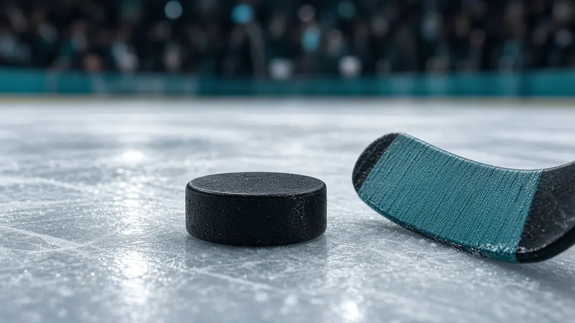

Urban Concierge Brief: SF Bay Area
Wednesday Oct 28 – Friday Oct 30, 2026 · Snapshot compiled Wed Oct 28, 2026, 6:00 am PT (Urban Concierge - Bay Area)
What's on




More in this brief
Where to eat

No Yelp ratings (Yelp blocks automated loads). Descriptions and hours are Michelin's unless noted; price signs are Michelin's. All carried from earlier runs.
State Bird Provisions, Fillmore, SF (1529 Fillmore St) · Californian · $$$ · Michelin One Star. Dim sum-style carts of seasonal California small plates; the menu changes often. Dinner daily 5:30–10 pm (10:30 Fri–Sat). Four blocks from the Fillmore for Slow Pulp on Wednesday.
https://guide.michelin.com/us/en/california/san-francisco/restaurant/state-bird-provisions
Zuni Café, Hayes Valley/Market St, SF (1658 Market St) · Californian/French · $$$. A San Francisco institution with a copper bar and wood-fired brick oven; Michelin says order oysters, the roast chicken for two and the gâteau Victoire. Near the opera house for Friday's Manon.
https://guide.michelin.com/us/en/california/san-francisco/restaurant/zuni-cafe
Kin Khao, Union Square, SF (55 Cyril Magnin St) · Thai/Californian · $$$. Layered, produce-driven Thai cooking; some dishes are very spicy. Its own site: lunch daily 11:30 am–2 pm, dinner Sun–Thu 5:30–9 pm. https://www.kinkhao.com/
Nopalito, NoPa, SF (306 Broderick St) · Mexican · $$. Blue-corn fish tacos, chilaquiles verdes, no reservations. Michelin lists 11:30 am–9 pm, except Wednesday 4:30–9 pm. https://guide.michelin.com/us/en/california/san-francisco/restaurant/nopalito
Burdell, Oakland (4640 Telegraph Ave) · $$$. Chef Geoff Davis's take on soul food. Open Wed–Fri in this window (closed Mon–Tue). https://guide.michelin.com/us/en/california/oakland/restaurant/burdell
Getting around

Muni and cable cars (carried): $2.85 single ride with Clipper, MuniMobile or tap-to-pay ($3.00 cash), good 120 minutes. Day pass $5.70. Cable car $9.00. Visitor Passports 1-day $15, 3-day $35, 7-day $47. Youth 18 and under ride Muni free. https://www.sfmta.com/getting-around/muni/fares
Muni reroutes: coming up are Oct 31 Halloween closures (Castro, Cortland, River of Life, Further Send Off), the Golden Gate Half Marathon Sun Nov 1 and the Día de los Muertos procession Mon Nov 2. Hayes Valley Farmers Market street space is in effect Fridays and Saturdays in October. https://www.sfmta.com/travel-updates
BART:
- Sun–Thu from 9 pm, expect 30-minute delays between Millbrae, SFO and Daly City for train control work (advisory reposted 12:05 am Oct 28). Leave extra time for late flights Wed and Thu.
- Through Fri Oct 30: late-night single tracking on the Yellow Line in Contra Costa County (carried).
- Coming up: reduced BART-to-OAK service the night of Nov 4, and a bus bridge between 24th St Mission and Daly City Nov 14–15 (carried).
- SFO: tap a contactless card or Clipper at the gate.
Sources: https://www.bart.gov/schedules/advisories · https://www.bart.gov/guide/airport
Bikes and scooters (from the Oct 23 brief, not re-checked): Lyft Bike is $1 to unlock plus $0.19/min classic or $0.49/min ebike, or a $15 day pass. Lime and Spin hold SF permits. No sidewalk riding. https://www.lyft.com/bikes/bay-wheels
SFO cars and rides (from the Oct 23 brief): Rental Car Center via AirTrain Blue Line (24 hours). Lyft and Uber pick up on Level 5 of the Domestic Garage. Taxis at the Arrivals center islands. https://www.flysfo.com/passengers/ground-transportation
Where to stay

Per SF Travel, Union Square has most major hotels and the best transit links; Nob Hill is the upscale pick and close to the Masonic; Hayes Valley and Civic Center put you by the opera and Zuni; Mission Bay is closest to Chase Center for Friday's Warriors game. https://www.sftravel.com/neighborhoods
Assumptions and refresh
- Public data only, from pages opened Wed Oct 28, 2026, around 6:00 am PT (NWS forecast and alerts, Caltrans District 4 news, BART advisory feed and SFMTA travel updates re-checked; events carried from the Tue 10 pm run; club listings, restaurants, fares, bikes and SFO notes carried from earlier runs). Nobody was contacted and nothing was signed up for.
- This is a snapshot. BayAreaDailySync refreshes it every 8 hours (6 am, 2 pm, 10 pm PT).
- Times are Pacific. Prices only where a cited page lists them.
Not verified
- Yelp ratings (blocked).
- Ticket prices for Slow Pulp, Huberman, Mo Welch, Poly Díaz, Sharks, Warriors and Creepatorium.
- Fillmore, Masonic, Punch Line and Cobb's pages load by script and couldn't be re-read this run, so those listings are carried from Monday.
- Event listings weren't re-opened this run (carried from Tue 10 pm). BART Yellow Line, OAK and bus-bridge items are carried; only the SFO/Millbrae advisory was re-checked.
- Live Muni alerts; fares, Lyft Bike, Lime and Spin pricing not re-checked.
- All restaurant hours and details carried from earlier runs; Zuni's Friday hours not checked.
- Other Friday events (SF Symphony, SFJAZZ, Halloween-eve parties) not checked.
- The Warriors tip-off time comes from ESPN's schedule feed; nba.com wasn't readable by script.
What changed since the last brief
What changed since the last brief (Tue 10:03 pm): only small changes. NWS reissued the Coastal Flood Advisory at 12:20 am and extended it through Sat Oct 31, 6 pm, with up to 1.9 ft of inundation; Thursday's SF high tide is now 7.7 ft. Highs tick up a degree (67 Wed, 66 Thu, 65 Fri). No new Caltrans closures, BART alerts or Muni reroutes.